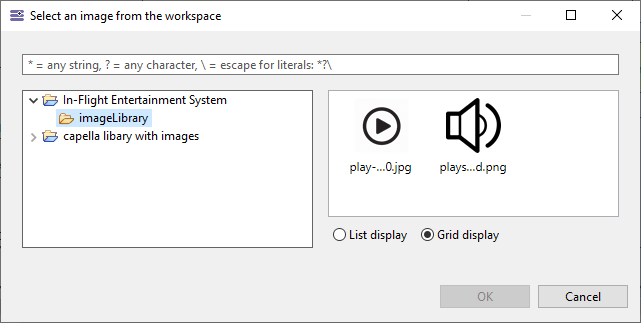
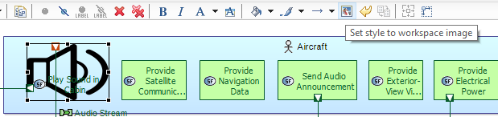
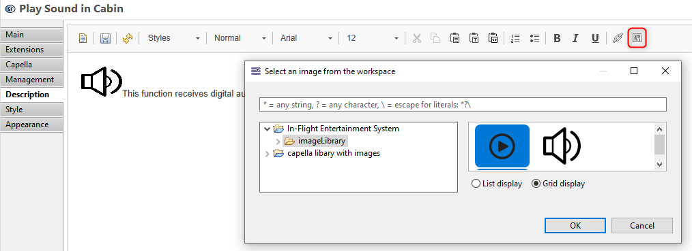
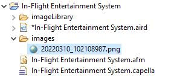

Capella allows to use images to:
The image can be selected only from the project in the workspace (nevertheless the project can be either physically located in the workspace or located in other folder in the file system).

The user clicks on the "Set style to workspace image" button to associate an image to a node

The user clicks on the "Add image" button to add an image in the rich text.

If an image is pasted from the clipboard into the rich text editor, a new image is created in the images folder of the project. There is no base64 encoding.

A special attention should be done about the images to ensure that they are properly located so that they can be properly displayed. To check that, you can start the validation and the I_46 and I_47 constraints will check that the images are reachable. The quick fix allows to select a new image among the available one in the workspace.
Before fixing the path to the image one by one
Then you can restart the validation to check again the images path
If your are migrating the Capella project refer to How to migrate Capella.